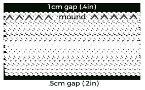

|
INGREDIENTS:
- Sushi Rice
- Nori seaweed sheets
- Cucumbers
- Toasted Sesame seeds
- Rice Vinegar
STEPS:
- Cutting nori for sushi – Cucumber Sushi is rolled as a Hosomaki (narrow roll),
so you'll need to cut your nori in half. Sheets of nori are not perfectly square,
so lay a piece of nori on the cutting board with the wide edge facing you and use a sharp
knife to cut down the middle (see the diagram below). You can also cut a stack of nori,
but you need to make sure they're stacked perfectly while being careful the stack doesn't
shift as you cut it.
- Cutting cucumber for sushi – Slicing cucumbers may seem like a no-brainer, but there are some
important tricks to learn so your roll closes properly. I've written out the instructions here,
but you may want to watch the video below to see the techniques.
The first step is to choose the right cucumber. Japanese cucumbers work best for Kappa Maki
because they're the perfect length, but other thin-skinned varieties, such as Lebanese or hot
house cucumbers, will work. Additionally, you want to try and find a cucumber that's straight
and roughly the same diameter from end to end.
To prepare your cucumber, wash and scrub it under cold running water and then dry it off.
Cut the ends off of your cucumbers using the width of the nori as a guide. This ensures the
cucumber won't spill out the sides of your roll. If you use a shorter cucumber, you can use
two strips per roll.
Next, you want to slice the cucumber in half lengthwise. If your cucumber is curved, rotate
it until the curve reaches the top so you can cut it perfectly in half. Lay the halves flat,
and then use your fingers to straighten out the cucumber against the side of your knife. Now you
want to cut it into ⅓-inch (8mm) wide strips. If you're using a Japanese cucumber, you'll cut each
half into three strips.
Set the cucumber sticks with the skin side down,
and then use your knife to slice off the translucent core of the cucumber. This is
also a good time to trim the cucumber so it's roughly the same width from end to end. If the
strip is wider on one side than the other, it will cause your roll to be lopsided, and it may not
close properly.
- How to roll cucumber sushi – Lay the nori sheet along the bottom edge of your makisu
(bamboo sushi mat) with the shiny side facing down. Wet your hands thoroughly with the tezu
and shake off any excess water before grabbing a handful of rice. You want to use about 80 grams
of rice per roll. Shape the rice into a cylinder slightly wider than your hand's width.
Proceed to spread the rice from one edge of the nori to the other, leaving a 1-centimeter
(.4 inch) gap along the top of the nori (see the diagram below).
Flatten the palm of one hand and use it like a wall along one side of the nori. Then use the tips
of the fingers of your other hand to spread the rice down towards the bottom edge of the nori,
leaving a .5 centimeter (.2-inch gap). When you do this, you want to leave a small mound of rice
along the top margin, which will help you roll the sushi later.

Now you can add your fillings into the center of the rice, but be careful not to overfill it,
or the roll won't close properly. I usually sprinkle on some toasted sesame seeds for a plain
Kappa Maki and place one cucumber stick in the middle. Grab the edge of your sushi mat with your
thumbs under the mat, and use your fingers to hold the cucumber in place as you roll the mat up and
over the fillings. The bottom margin of the nori should meet the small mound of rice near the top
of the nori. Now roll the cucumber sushi a quarter turn so the seam of the nori is on the bottom.
Give the sushi mat a squeeze on both sides using your thumbs and fingers. This will cause the top to
puff out. Now use your forefingers to press the top down while supporting the sides of the roll. This
will make the roll almost perfectly square with the cucumber in the center of the rice.
- How to cut your sushi – If your nori is 19 centimeters wide (7.4 inches), use a ruler and sharp knife
to score the roll at 3.2 cm (1 ¼ inches), 6.4 cm (2 ½ inches), and 9.5 cm (3 ¾ inches) from one side.
Now wet your knife using a damp towel and use short back-and-forth strokes to cut the sushi roll in half
where you scored it. Line the two halves up and use the two remaining score marks to cut the halves into
thirds. Tip the sliced rolls upwards so the filings show up on top.
|